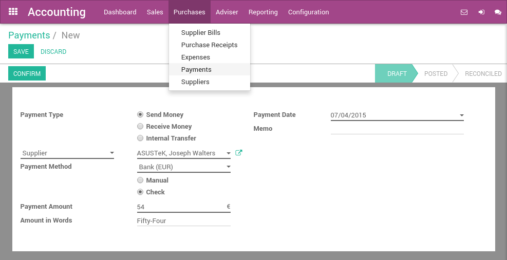

Once you decide to pay a supplier bill, you can select to pay by check. Then, at the end of the day, the manager can print all checks by batch. Finally, the bank reconciliation process will match the checks you sent to suppliers with actual bank statements.
Configuration
Install the required module
To record supplier payments by checks, you must install the Check Writing module. This module handle the process of recording checks in Odoo. Others modules are necessary to print checks, according to the country. As an example, the U.S. Check Printing module is required to print U.S. checks.
Note
According to your country and the chart of account you use, those modules may be installed by default. (example: United States users have nothing to install, it's configured by default).
Activate checks payment methods
In order to allow payments by checks, you must activate the payment method on related bank journals. From the accounting dashboard (the screen you get when you enter the accounting application), click on your bank account on option. On the Payment Method field, set Check.

Compatible check stationery for printing checks
United States
For the United States, Odoo supports by default the check formats of:
- Quickbooks & Quicken: check on top, stubs in the middle and bottom
- Peachtree: check in the middle, stubs on top and bottom
- ADP: check in the bottom, and stubs on the top.
It is also possible to customize your own check format through customizations.
Pay a supplier bill with a check
Paying a supplier with a check is done in three steps:
- registering a payment you'd like to do on the bill
- printing checks in batch for all registered payments
- reconcile bank statements
Register a payment by check
To register a payment on a bill, open any supplier bill from the menu . Once the supplier bill is validated, you can register a payment. Set the Payment Method to Check and validate the payment dialog.

Explanation of the fields of the payment screen:
Print checks
From the accounting dashboard, on your bank account, you should see a link "X checks to print". Click on this link and you will get the list of all checks that are not printed yet. From this screen, you can print all checks in batch or review them one by one.
If you want to review every payment one by one before printing the check, open on the payment and click on Print Check if you accept it. A dialog will ask you the number of the check. It automatically proposes you the next number, but you can change it if it does not match your next check number.
To print all checks in batch, select all payments from the list view and Print Check from the top "print" menu.
Reconcile Bank Statements
Once you process your bank statement, when the check is credited from your bank account, Odoo will propose you automatically to match it with the payment. This will mark the payment as Reconciled.
Tip
to review checks that have not been credited, open the list of payments and filter on the Sent state. Review those payments that have a date more than 2 weeks ago.
Pay anything with a check
You can register a payment that is not related to a supplier bill. To do so, use the top menu . Register your payment and select a payment method by check.
If you pay a specific supplier bill, put the reference of the bill in the Memo field.
Once your payment by check is registered, don't forget to Confirm it. Once confirmed, you can use Print Check directly or follow the preceding flow to print checks in batch: